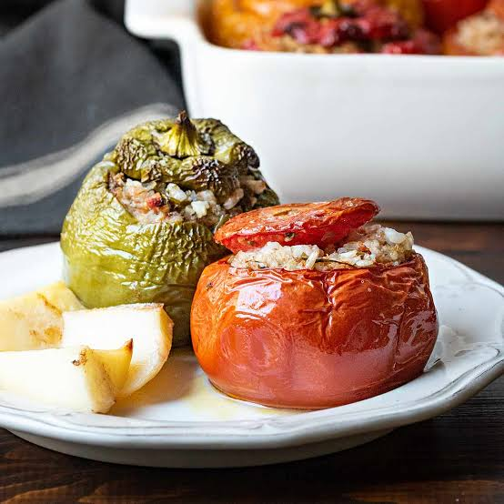

Try this quintessential summer Greek Mediterranean dish: Roasted summer vegetables stuffed with rice and herbs. The famous Gemista or Yemista.
Preheat oven at 400 Fahrenheit (200 Celsius). Wash the tomatoes and peppers. For the peppers cut around the stem and empty the inside of the pepper. For the tomato cut around the base (the bottom part) not the stem part and empty the tomato with a spoon. Put these pieces of tomato in a separate bowl along with the juices. Make tiny slits on the inside bottom of the peppers and tomatoes (not all the way through) Place the empty tomatoes and peppers along with their caps n a large pan about 3 inches deep. Take 2-3 zucchini peel them and grate them, put the grated zucchini in another bowl. In a food processor add an onion, 4-5 garlic cloves, a bit of oil about a teaspoon and some salt. Mix but not too much (you don’t want a paste). Add the onion mixture to the zucchini. Take a small green bell pepper and also dice it and add to the zucchini mixture. Finally take a small potato (a bit larger than an egg) and grate it and add to the zucchini mixture. Now strain the juice from the tomatoes (squeeze the tomato with your hands too) and save in a separate bowl. Now you should have 3 bowls one with tomato, one with zucchini-potato-onion mixture and one with tomato juice.Cut the tomato in small pieces and mix it with the zucchini mixture. Add 1 tablespoon salt, dry mint, parsley and tomato paste. Now add to the mixture 10 to 12 tablespoons short grain rice and 1 teaspoon lemon juice. Finally add ¾ cup olive oil. Let the mixture sit. Now start cutting the potatoes. Take 2 lbs. of potatoes, peel them and cut them into quarters, place in a bowl. Take 3-4 zucchini, peel and slice and add to potatoes. Add ¾ cup olive oil, 1 tablespoon oregano, some salt and 2 cloves garlic cut n small pieces. Mix well (with your hands preferably). Then add the tomato juice which you had saved from the tomatoes in step 8. Now start filling the tomatoes and peppers with rice all the way to the top and close with their caps. Add the potatoes to the pan, making sure to place around the tomatoes and peppers so they don’t slide in the tray. If there is any rice mixture left mix it with the quartered potatoes and add to to the pan. Add 5 cloves to the potatoes and about 5 allspice. Add about a cup of water, but not on top-you don’t want to “wash off” the oil. Add the water in a corner of the pan and tilt slightly so the water goes everywhere. Bake in the oven for about 15-20 minutes at 400 Fahrenheit (200 Celsius). Then reduce to 320-340 Fahrenheit (170-160 Celsius ) and bake for another 1-½ hours. If you notice it getting dry, add a bit more water. To see if it is done, check the rice it should be soft and mushy.